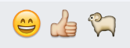
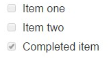
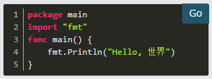

<link rel="import" href="../bower_components/polymer/polymer.html">
<link rel="import" href="../bower_components/polymer-bootstrap/polymer-bootstrap.html">
<link rel="import" href="../bower_components/iron-media-query/iron-media-query.html">
<!-- <link rel="import" href="../bower_components/iron-swipeable-pages/iron-swipeable-pages.html"> -->
<link rel="import" href="left-side.html">

<dom-module id="sameview-docFormatting">
  <link rel="import" type="css" href="../css/animate.min.css">
  <link rel="import" type="css" href="../css/page.css">
  <link rel="import" type="css" href="../css/style.css">
  <template>
    <style include="polymer-bootstrap">
    a:focus,a:hover{
      text-decoration: none;
    }
    </style>
      <iron-media-query query="max-width: 768px" query-matches="{{_smallScreen}}"></iron-media-query>
    <app-route
        route="[[route]]"
        pattern="/:category"
        data="{{_routeData}}">
    </app-route>
    <div class="" fade-in$="[[!loading]]" hidden$="[[failure]]">
      <header class="docHeader">
        <paper-icon-button on-click="_toggleDrawer" class="mobile-toggle-drawer-btn" icon="menu" aria-label="Main navigation" role="button" tabindex="0" aria-disabled="false"></paper-icon-button>
        <div class="logo pull-left">
          <a href="/"></a>
        </div>
        <template is="dom-if" if="[[!smallScreen]]">
          <iron-selector role="navigation" class="menu-list pull-right" selected="[[category.name]]" attr-for-selected="name">
            <a name="home" href="/home"><paper-ripple></paper-ripple>返回官网</div></a>
          </iron-selector>    　　
        </template>
      </header>
      <div class="docMatter" style="margin-top:50px;">
        <left-side page="{{page}}"></left-side>
        <div class="docContent">
          <div class="crumbs">
            <p><a name="document" href="/document">文件</a><font> »</font></p>
            <p><font>消息 »</font></p>
            <p>格式化文本</p>
          </div>
          <div role="main" class="document">
            <div itemprop="articleBody">

              <div class="section" id="formatting-text">
                <h1>格式化文本</h1>
                <p>Markdown使邮件格式变得容易。按照通常的方式键入消息，并使用这些规则以特殊的格式进行渲染。</p>
                <div class="section" id="emojis">
                  <h2>表情符号</h2>
                  <p>打开表情符号自动填充，<code class="docutils literal"><span class="pre">:</span></code>然后输入两个字符。可以找完整的emojis列表。也可以创建自己的自定义的表情符号，如果你想使用表情符号不存在。</p>
                  <p><code class="docutils literal"><span class="pre">:smile:</span> <span class="pre">:+1:</span> <span class="pre">:sheep:</span></code></p>
                  <p>呈现为：</p>
                  
                </div>
                <div class="section" id="text-style">
                  <h2>文字风格</h2>
                  <p>您可以使用一个<code class="docutils literal"><span class="pre">_</span></code>或<code class="docutils literal"><span class="pre">*</span></code>多个单词来使其为斜体。使用两个来使其变得粗体。</p>
                  <ul class="simple">
                    <li><code class="docutils literal"><span class="pre">_italics_</span></code>呈现<cite>斜体</cite></li>
                    <li><code class="docutils literal"><span class="pre">**bold**</span></code>呈现为<strong>粗体</strong></li>
                    <li><code class="docutils literal"><span class="pre">**_bold-italic_**</span></code> 呈现为 </li>
                    <li><code class="docutils literal"><span class="pre">~~strikethrough~~</span></code> 呈现为 </li>
                  </ul>
                </div>
                <div class="section" id="links">
                  <h2>链接</h2>
                  <p>通过将所需的文本放在方括号中，并将相关联的链接放在正常括号中来创建标签链接。</p>
                  <p><code class="docutils literal"><span class="pre">[Check</span> <span class="pre">out</span> <span class="pre">三人即时通!](https://3ren.com/)</span></code></p>
                  <!-- <p>呈现为：<a class="reference external" href="https://3ren.com/">查看最重要！</a></p> -->
                </div>
                <div class="section" id="headings">
                  <h2>标题</h2>
                  <p>通过在标题前键入＃和一个空格来做标题。对于较小的标题，请使用更多的＃。</p>
                  <div class="highlight-none"><div class="highlight"><pre><span></span>##大标题 <br>###小标题 <br>####甚至更小的标题</pre></div></div>
                  <p>呈现为：</p>
                  
                  <p>或者，您可以使用<code class="docutils literal"><span class="pre">===</span></code>或<code class="docutils literal"><span class="pre">---</span></code>创建标题来强调文本。</p>
                  <div class="highlight-none"><div class="highlight"><pre><span></span>大标题 <br>-------------</pre></div></div>
                  <p>呈现为：</p>
                  
                </div>
                <div class="section" id="lists">
                  <h2>清单</h2>
                  <p>通过使用<code class="docutils literal"><span class="pre">*</span></code>或<code class="docutils literal"><span class="pre">-</span></code>作为项目符号创建列表。通过在其前面添加两个空格来缩小项目符号。</p>
                  <div class="highlight-none"><div class="highlight"><pre><span></span>*项目一 <br>*项目二 <br>  *项目二分</pre></div></div>
                  <p>呈现为：</p>
                  <ul class="simple">
                    <li>项目一</li>
                    <li>项目二
                      <ul id="simpleUl">
                      <li>项目二分</li>
                      </ul>
                  </li>
                </ul>
                <p>通过使用数字使其成为有序列表：</p>
                <div class="highlight-none"><div class="highlight"><pre><span></span>项目一 <br>项目二 <br>项目三</pre></div></div>
                <p>呈现为：</p>
                <ol class="arabic simple">
                  <li>项目一</li>
                  <li>项目二</li>
                  <li>项目三</li>
                </ol>
                <p>您也可以从任何数字开始列表：</p>
                <div class="highlight-none"><div class="highlight"><pre><span></span>第一个列表号是4。 <br>第二个列表号是5。 <br>第三个列表号是6。</pre></div></div>
                <p>呈现为：</p>
                <ol class="arabic simple" start="4">
                  <li>第一个列表号是4。</li>
                  <li>第二个列表号是5。</li>
                  <li>第三个列表号是6。</li>
                </ol>
                <p>通过包括方括号进行任务列表：</p>
                <div class="highlight-none"><div class="highlight"><pre><span></span> -  []项目一 <br>-  []第二项 <br>-  [x]已完成项目</pre></div></div>
                <p>呈现为：</p>
                
              </div>
              <div class="section" id="code-block">
                <h2>代码块</h2>
                <p>通过将每行缩进四个空格，或者放在<code class="docutils literal"><span class="pre">```</span></code>代码上方和下方的行上来创建代码块。</p>
                <p>例：</p>
                <div class="highlight-none"><div class="highlight"><pre><span></span>``` <br>代码块 <br>```</pre></div></div>
                <p>呈现为：</p>
                <div class="highlight-none"><div class="highlight"><pre><span></span>代码块</pre></div></div>
                <p><strong>语法突出显示</strong></p>
                <p>要添加语法突出显示，请<code class="docutils literal"><span class="pre">```</span></code>在代码块开头之后键入要突出显示的语言。三人即时通还提供了四种不同的代码主题（GitHub，Solarized Dark，Solarized Light，Monokai），可以在<strong>帐户设置</strong> &gt; <strong>显示</strong> &gt; <strong>主题</strong> &gt; <strong>自定义主题</strong> &gt; <strong>中心频道样式</strong></p>
                <p>支持的语言包括：
                  <code class="docutils literal"><span class="pre">actionscript</span></code>，<code class="docutils literal"><span class="pre">applescript</span></code>，<code class="docutils literal"><span class="pre">bash</span></code>，<code class="docutils literal"><span class="pre">clojure</span></code>，<code class="docutils literal"><span class="pre">coffeescript</span></code>，<code class="docutils literal"><span class="pre">cpp</span></code>，<code class="docutils literal"><span class="pre">cs</span></code>，<code class="docutils literal"><span class="pre">css</span></code>，<code class="docutils literal"><span class="pre">d</span></code>，<code class="docutils literal"><span class="pre">dart</span></code>，<code class="docutils literal"><span class="pre">delphi</span></code>，<code class="docutils literal"><span class="pre">diff</span></code>，<code class="docutils literal"><span class="pre">django</span></code>，<code class="docutils literal"><span class="pre">dockerfile</span></code>，<code class="docutils literal"><span class="pre">erlang</span></code>，<code class="docutils literal"><span class="pre">fortran</span></code>，<code class="docutils literal"><span class="pre">fsharp</span></code>，<code class="docutils literal"><span class="pre">gcode</span></code>，<code class="docutils literal"><span class="pre">go</span></code>，<code class="docutils literal"><span class="pre">groovy</span></code>，<code class="docutils literal"><span class="pre">handlebars</span></code>，<code class="docutils literal"><span class="pre">haskell</span></code>，<code class="docutils literal"><span class="pre">haxe</span></code>，<code class="docutils literal"><span class="pre">java</span></code>，<code class="docutils literal"><span class="pre">javascript</span></code>，<code class="docutils literal"><span class="pre">json</span></code>，<code class="docutils literal"><span class="pre">julia</span></code>，<code class="docutils literal"><span class="pre">kotlin</span></code>，<code class="docutils literal"><span class="pre">less</span></code>，<code class="docutils literal"><span class="pre">lisp</span></code>，<code class="docutils literal"><span class="pre">lua</span></code>，<code class="docutils literal"><span class="pre">makefile</span></code>，<code class="docutils literal"><span class="pre">markdown</span></code>，<code class="docutils literal"><span class="pre">matlab</span></code>，<code class="docutils literal"><span class="pre">objectivec</span></code>，<code class="docutils literal"><span class="pre">ocaml</span></code>，<code class="docutils literal"><span class="pre">perl</span></code>，<code class="docutils literal"><span class="pre">php</span></code>，<code class="docutils literal"><span class="pre">powershell</span></code>，<code class="docutils literal"><span class="pre">puppet</span></code>，<code class="docutils literal"><span class="pre">python</span></code>，<code class="docutils literal"><span class="pre">r</span></code>，<code class="docutils literal"><span class="pre">ruby</span></code>，<code class="docutils literal"><span class="pre">rust</span></code>，<code class="docutils literal"><span class="pre">scala</span></code>，<code class="docutils literal"><span class="pre">scheme</span></code>，<code class="docutils literal"><span class="pre">scss</span></code>，<code class="docutils literal"><span class="pre">smalltalk</span></code>，<code class="docutils literal"><span class="pre">sql</span></code>，<code class="docutils literal"><span class="pre">swift</span></code>，<code class="docutils literal"><span class="pre">tex</span></code>，<code class="docutils literal"><span class="pre">vbnet</span></code>，<code class="docutils literal"><span class="pre">vbscript</span></code>，<code class="docutils literal"><span class="pre">verilog</span></code>，<code class="docutils literal"><span class="pre">xml</span></code>，<code class="docutils literal"><span class="pre">yaml</span></code></p>
                  <p>例：</p>
                  <div class="highlight-none"><div class="highlight"><pre><span></span>``去吧 <br>包主 <br>导入“fmt” <br>func main（）{ <br>    fmt.Println（“你好，世界”） <br>} <br>```</pre></div></div>
                  <p>呈现为：</p>
                  <p><strong>GitHub主题</strong></p>
                  
                  <p><strong>日光黑暗主题</strong></p>
                  
                  <p><strong>日光灯主题</strong></p>
                  
                  <p><strong>Monokai主题</strong></p>
                  
                </div>
                <div class="section" id="in-line-code">
                  <h2>在线代码</h2>
                  <p>通过用反引号（`）围绕它创建内联等宽字体，而不是单引号（'）。</p>
                  <div class="highlight-none"><div class="highlight"><pre><span></span>`monospace`</pre></div></div>
                  <p>呈现为：<code class="docutils literal"><span class="pre">monospace</span></code>。</p>
                </div>
                <div class="section" id="in-line-images">
                  <h2>联机图像</h2>
                  <p>通过使用感叹号，然后使用方括号中的替代文本，然后使用圆括号中的图像的URL来添加内嵌图像。您可以通过在链接之后将文本放在引号中来添加悬停文本。</p>
                  <p><strong>！[ </strong> <em>{alt text} </em> <strong>]（</strong> <em>{URL of image}</em>   “ <em>{Hover text}</em> ” <strong>）</strong></p>
                  <p>如果原始图像的高度超过500像素，系统将高度设置为500像素，并调整宽度以保持原始宽高比。</p>
                  <p>您可以使用等号和图像的URL后的宽度x高度来设置显示图像的宽度和高度。如果仅设置宽度，系统会调整高度以维持原始宽高比。</p>
                  <p><strong>示例</strong>：</p>
                  <dl class="docutils">
                    <dt>具有悬停文本的内联图像</dt>
                    <dd><div class="first highlight-none"><div class="highlight"><pre><span></span>！[三人即时通]（../images/icon-76x76.png“Icon”</pre></div></div>
                    <dt>带链接的内联图像</dt>
                    <dd><p class="first">注意额外的方括号。</p>
                      <div class="highlight-none"><div class="highlight"><pre><span></span>[！[三人即时通（../images/icon-76x76.png）（https://3ren.group/）</pre></div></div>
                    </dd>
                    <dt>在50像素宽和76像素高的显示的内联图像</dt>
                    <dd><div class="first highlight-none"><div class="highlight"><pre><span></span>！[三人即时通]（../images/icon-76x76.png = 50x76“Icon”）</pre></div></div>
                    </dd>
                    <dt>内置图像以50像素宽显示，高度调整为适合</dt>
                    <dd><div class="first highlight-none"><div class="highlight"><pre><span></span>！[三人即时通]（../../ images/icon-76x76.png = 50“Icon”）</pre></div></div>
                    </dd>
                  </dl>
                </div>
                <div class="section" id="lines">
                  <h2>行</h2>
                  <p>通过使用三个创建线<code class="docutils literal"><span class="pre">*</span></code>，<code class="docutils literal"><span class="pre">_</span></code>或<code class="docutils literal"><span class="pre">-</span></code>。</p>
                  <p><code class="docutils literal"><span class="pre">***</span></code></p>
                  <p>呈现为：</p>
                </div>
                <hr class="docutils">
                <div class="section" id="block-quotes">
                  <h2>阻止报价</h2>
                  <p>创建块引号使用<code class="docutils literal"><span class="pre">&gt;</span></code>。</p>
                  <p><code class="docutils literal"><span class="pre">&gt;</span> <span class="pre">block</span> <span class="pre">quotes</span></code> 呈现为：</p>
                  
                </div>
                <div class="section" id="tables">
                  <h2>表</h2>
                  <p>通过在标题行下方放置虚线并用管道分隔列来创建表<code class="docutils literal"><span class="pre">|</span></code>。（列不需要排列，以使其正常工作）。选择如何通过<code class="docutils literal"><span class="pre">:</span></code>在标题行中包含冒号来对齐表格列。</p>
                  <div class="highlight-none"><div class="highlight"><pre><span></span>| 左对齐| 中心对齐| 右对齐|<br>| ：------------ |：---------------：| -----：|<br>| 左列1 | 这个文本| $ 100 |<br>| 左列2 | 是| $ 10 |<br>| 左栏3 | 中心| $ 1 |</pre></div></div>
                  <p>呈现为：</p>
                  
                </div>
                <div class="section" id="math-formulas">
                  <h2>数学公式</h2>
                  <p>通过在代码块中使用LaTeX创建公式<code class="docutils literal"><span class="pre">latex</span></code> <a class="reference internal" href="#code-block"></a></p>
                  <div class="highlight-none"><div class="highlight"><pre><span></span>```乳胶<br>X_k = \ sum_ {n = 0} ^ {2N-1} x_n \ cos \ left [\ frac {\ pi} {N} \ left（n + \ frac {1} {2} + \ frac {N} {2 } \ right）\ left（k + \ frac {1} {2} \ right）\ right]<br>```</pre></div>
                  </div>
                  <p>呈现为：</p>
                  
                </div>
              </div>


           </div>
          </div>
        </div>
      </div>

  </div>
</template>
<script>
  Polymer({
    is: 'sameview-docFormatting',

     ready: function(){
       var win = $(window);
       $(window).resize(function(){
         this.winwidth = win.width();//屏幕的宽  .width()
         this.winheight = win.innerHeight()-1;//屏幕的高
         var bgHeight = this.winheight;
        //  $(this.$.bg).height(bgHeight);
       });
       this.winheight = win.innerHeight()-1;//屏幕的高
       this.winwidth = win.width();//屏幕的宽  .width()
       var bgHeight = this.winheight;
      //  $(this.$.bg).height(bgHeight);

     },

  });

</script>

</dom-module>
